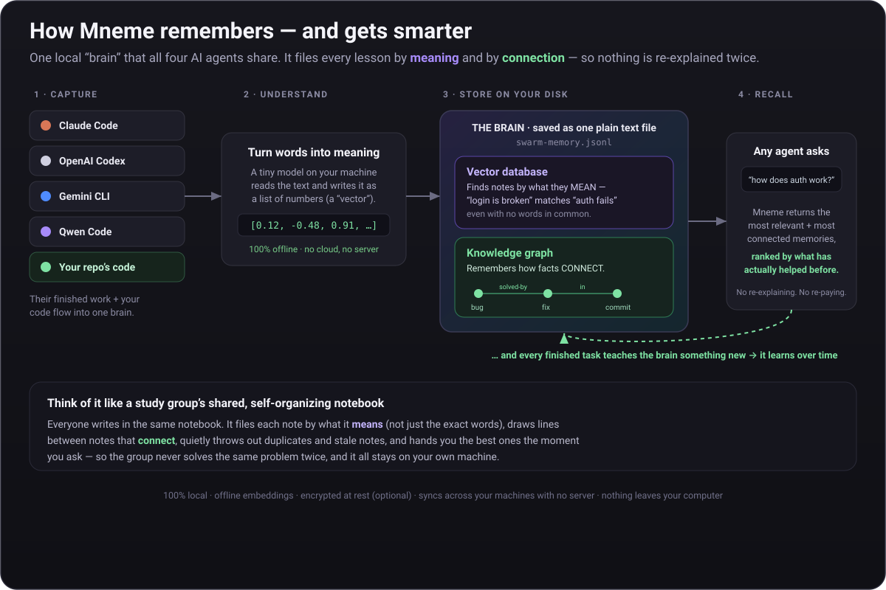
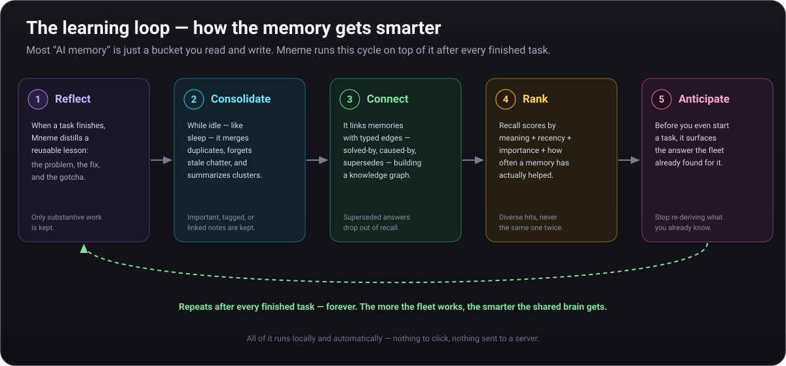

Documentation
Termpolis Docs
The definitive guide to Termpolis — Secure AI-Assisted Development. The local-first multi-agent terminal where Claude, Codex, Gemini, and Qwen work as a team without your source code leaving the machine. Built-in AI Security Center, swarm orchestration, MCP server, and a one-shortcut path from terminal to Slack, Teams, or a PR. Every feature, every panel, every shortcut.
Overview

Termpolis is a cross-platform desktop terminal manager (Windows, macOS, Linux) built on
Electron + React + TypeScript with node-pty powering the underlying shells.
It ships as a native app, code signed on Windows, notarized on macOS.
What makes it different:
- Secure AI-assisted development. Built-in AI Security Center auto-scans every AI prompt against 70+ secret patterns, enforces Gemini paid-tier mode, and keeps an auditable JSONL log of every AI-agent terminal launch — every check runs locally.
- Multi-agent swarm. Claude Code, Codex, Gemini CLI, and Qwen Code work together on a task. A dedicated Claude Code instance acts as the conductor.
- MCP server baked in. AI agents control Termpolis via Model Context Protocol, open terminals, run commands, send messages.
- Transparent routing. Every subtask shows which agent got it, why, and what it cost.
- Activity observability. Every token, every tool call, every message from every agent is visible in real time.
- Intervention controls. Pause, cancel, or steer any agent mid-task without leaving the feed.
- Shared memory. A RAG-backed memory store that any agent can read and write via MCP.
- MCP-native end to end. All four agents speak MCP — no terminal-output parsers, no glue scripts, no bridge code paths.
- Share-ready output. One shortcut from terminal to Slack, Teams, or a PR — see Copy for Slack / Teams / PRs.
🛡 AI Security Center
Termpolis ships an in-app AI Security Center at Settings → Security. Its goal is to give administrators visibility and layered controls around outbound AI traffic so a team can adopt Claude Code, Codex, Gemini CLI, and Qwen Code with the obvious accidents caught and a verifiable record of what was sent — knowing that no in-the-loop tool can guarantee a hosted-model prompt never reaches the provider.
What it is and isn't. Any tool that lets you talk to a hosted model
is, by definition, sending your prompt to that provider. Termpolis cannot air-gap
a prompt you choose to send and cannot guarantee a provider's stated retention
policy is enforced server-side. The Security Center is defense in depth —
it catches recognisable secrets, flags oversize code/.env pastes,
detects unexpected network endpoints, and writes everything to a local audit log.
For absolute air-gap, run a local model and accept the quality / hardware
trade-off.
Design principles:
- Local-first. Every check runs on the machine. None of these features send data to Termpolis or any third party.
- Native, not a browser/IDE plugin. Termpolis is a terminal manager, not a Chrome extension piping your buffer to a SaaS backend.
- No telemetry. No login, no phone-home. Optional crash reporting is opt-in and redacts user-folder paths first.
- Verifiable. Every claim links to the provider's published ToS page; a weekly drift watcher (v1.11.52) opens a tracking issue when those pages change.
- Honest about limits. Each control below names what it can not catch.
Per-provider training-disposition facts
The panel summarizes how each provider treats prompts on their commercial tier, sourced from the official ToS pages and updated with each release of Termpolis:
- Anthropic (Claude Code). API + commercial usage — default off for training.
- OpenAI (Codex). API platform — default off for training.
- Google (Gemini CLI). Paid tier (API key, Vertex AI, Code Assist) — excluded from training. Free OAuth tier — Google may use prompts to improve products. Flagged yellow.
- Alibaba (Qwen Code). Paid DashScope — excluded from training. Local Ollama mode — prompts stay on your machine instead of going to any provider.
Auto-scan every prompt (v1.11.44+)
Once you launch claude, codex, gemini, or
qwen in a terminal, every Enter and every paste-sized chunk
(≥32 bytes) is scanned in main-process memory against 70+ regex rules
before it reaches the PTY. Hits are redacted in place, audited
as redaction_hit events, and surfaced via a dismissable banner.
Non-AI terminals are not scanned (zero overhead). Coverage spans:
- AWS (access keys
AKIA…/ASIA…, secrets, session tokens). - GitHub (PAT
ghp_…, fine-grainedgithub_pat_…, OAuth secrets, runner tokens), GitLab, Bitbucket. - Azure (Storage AccountKey, SAS signature, connection strings, AD client secret, DevOps PAT) and GCP (service-account JSON, OAuth client ID).
- AI providers: OpenAI, Anthropic, Google, HuggingFace, Cohere, Replicate.
- Payments (Stripe, PayPal Braintree, Square), comms (Slack, Discord, Telegram, Twilio, SendGrid, Mailgun, Mailchimp, Postmark).
- Cloud (Cloudflare, DigitalOcean, Heroku, Netlify, Vercel, Fly.io, Render, Pulumi), CI/CD (CircleCI, Travis, Codecov).
- Observability (Sentry DSN, Datadog, New Relic, Rollbar, Honeycomb, Mapbox, Okta, Auth0).
- Project mgmt (Linear, Notion, Asana, Jira, Figma), package registries (npm, PyPI, Docker Hub).
- Secrets vaults (HashiCorp Vault, Doppler, 1Password Connect), DB connection strings (Postgres/MySQL/MongoDB/Redis), HTTP basic-auth URLs.
- JWT, PEM/GPG private key blocks, and the
.env-style catch-all (SECRET_KEY=…).
A manual paste-and-scan box also lives in Settings → Security for one-off checks of clipboard text before pasting elsewhere.
Hits return a redacted preview so you can decide whether the prompt is safe to send. The redaction scanner targets high-confidence patterns to keep false-positive rates low — it is not a comprehensive DLP solution. Custom corporate tokens may not be detected and must be vetted separately.
Gemini account-mode auto-detect + Strict Mode
The Gemini CLI is the highest-risk surface, because the free OAuth tier may be used for product improvement. Termpolis inspects the running shell environment to identify which tier the CLI will hit:
- Vertex AI —
GOOGLE_APPLICATION_CREDENTIALS+GOOGLE_CLOUD_PROJECT. - Code Assist (Workspace) —
GOOGLE_GENAI_USE_GCA=true. - Paid API key —
GEMINI_API_KEYorGOOGLE_API_KEY. - Free OAuth fallback — none of the above. Flagged in red.
When Strict Mode is enabled, Termpolis intercepts gemini
invocations from any terminal. If the resolved account mode isn't paid-tier-safe, the
launch is cancelled with Ctrl+C and an in-band ANSI banner explains why.
The blocked launch is recorded in the audit log as BLOCKED: strict-mode + free-tier.
Strict Mode only intercepts shell-level invocations of the gemini binary —
it does not block out-of-band paths (a renamed binary, a script that calls the Google
API directly, etc.). It is a tripwire for the common-case mistake, not a full proxy.
Local JSONL audit log
Every AI-agent terminal launch can be recorded in ai-security-audit.jsonl
inside the userData directory. Each record is one JSON object containing the timestamp,
the agent, the terminal id, and (optionally) byte counts and hit counts. The file is
append-only with 10 MB rotation. It can be wiped from Settings → Security at any time.
The audit log captures only what Termpolis observes locally — activity that bypasses
Termpolis (a Gemini CLI run from a separate native terminal window, for example) is
not visible to the audit log.
Sensitive-file-read alert (v1.11.53)
The pre-send secret scanner can only see what you type. When the AI
agent autonomously decides to read a sensitive file via its own
Read tool (or runs cat/head/grep
on one through Bash), the file's bytes have already been added to
the agent's context and transmitted to the provider on the next turn. The
terminal-side scanner never sees that path. This watcher closes the gap.
How it works.
src/main/sensitiveFileWatcher.ts subscribes to
agentEventBus tool_call events emitted by the
transcript watchers (Claude Code / Codex / Gemini). For each event it inspects
the tool name and arguments:
- Filesystem-style tools (
Read,Edit,Write,read_file,view, …) → pullsfile_path/path/filenamefrom the input. - Shell-style tools (
Bash,run_shell_command,container.exec, …) → tokenises the command, splits on&&/;/|, and identifies positional arguments tocat/head/tail/grep/cp/curl -F file=@and 15 other reader commands.
Each candidate path is matched against a hand-curated rule list:
.env/.env.local/.env.production
(excluding .env.example/.sample/.template);
*.pem/*.key/*.p12/*.pfx/*.jks/*.keystore;
id_rsa/id_ed25519/id_ecdsa/id_dsa (excluding .pub);
~/.aws/credentials + ~/.aws/config;
GCP service-account JSONs;
files under ~/.ssh/ excluding known_hosts/config/*.pub;
.netrc/.npmrc/.pypirc;
~/.docker/config.json; ~/.kube/config + *.kubeconfig;
secrets.{yml,yaml,json,env,toml,ini}; credentials.{yml,json,…};
*.kdbx/*.kdb (KeePass);
and Chrome/Firefox/Edge cookie databases.
On a match the watcher writes an audit entry tagged
sensitive_file_read (with rule id, tool name, source path) and
fires a terminal:sensitive-file-read IPC event to the renderer
which displays a banner naming the file and the agent. A per-terminal counter
is exposed via aiSecurity.sensitiveReads(terminalId) so the
Security panel can show "3 sensitive reads this session" alongside the running
list.
What it cannot catch.
The bytes have already been transmitted by the time the watcher runs — the
transcript JSONL is downstream of the agent's tool runtime. Files exfiltrated
via subprocesses the agent invokes through arbitrary code (e.g.
python -c 'open(".env").read()', network sockets opened by
langchain wrappers, MCP servers run by the agent itself) are only caught if the
wrapping Bash command parses cleanly to one of the known reader
commands. The watcher is intentionally conservative on the false-positive side —
flagging an irrelevant file once is cheap; missing a leak is expensive.
Code-chunk + env-dump heuristics (v1.11.52)
Outbound prompts larger than 2 KB are inspected for code-shaped structure
(indentation density, braces/punctuation density, common keywords like
function/class/import/def,
and module declarations such as import … or #include).
When two or more of those signals fire, the prompt is flagged via a
terminal:code-chunk-detected event and an audit entry tagged
code-chunk:<signals>. A separate detector counts
UPPER_SNAKE=value lines (with an optional export
prefix) — five or more triggers an env-dump flag and audit entry.
Both detectors are heuristic: the prompt is not blocked. They exist so
that a casual paste of an entire source file or .env does not slip
past unnoticed. False negatives are possible on minified or unusual code shapes.
Per-agent egress audit (v1.11.52)
When an AI agent is launched, Termpolis starts a 60-second poller that asks
the OS what TCP connections the agent's PID has open
(netstat -ano on Windows, ss -tnp on Linux,
lsof -nP -iTCP -p <pid> on macOS) and records each unique
remote host:port. The Security panel can read this back per
terminal so you can answer "did Claude talk to anything other than
api.anthropic.com today?". This is polling, not packet capture —
sub-minute bursts can be missed, and we do not reverse-DNS or inspect the
payload. If the platform tool is missing or the user has insufficient
permissions, the poller silently returns nothing and the rest of the app
continues to function.
Weekly ToS drift watcher (v1.11.52)
A scheduled GitHub Action
(.github/workflows/tos-drift.yml)
runs every Monday at 13:00 UTC. It fetches the four provider pages this app
cites, normalises the HTML aggressively (strips
<script>/<style>/<svg>/<head>
and HTML comments, decodes entities, collapses whitespace), hashes the result,
and compares it to a snapshot committed under
docs/security-snapshots/. When a hash differs the action opens a
tracking issue tagged security,tos-drift so a human reviewer can
decide whether the legal language has materially changed and Termpolis needs
an update. The watcher detects rendered-text changes — it cannot infer legal
intent.
Legal disclaimer
The AI Security Center is best-effort, not regulatory-grade. The
project is licensed Apache 2.0 "AS IS". The full disclaimer ships in
TERMS.md §5a
and inside the app at Settings → Security. Provider terms can change without notice;
you must verify provider terms before transmitting confidential data. To the maximum
extent permitted by law, the authors and contributors of Termpolis disclaim all
liability for any data leak, breach, regulatory violation, contractual breach, or
business loss arising from your use of any AI agent launched through this application.
Installation
Download the latest build from the downloads page or GitHub Releases.
| Platform | File | Signed |
|---|---|---|
| Windows | termpolis-setup-<ver>.exe | Code-signed |
| macOS (Apple Silicon) | termpolis-<ver>-arm64.dmg | Notarized |
| macOS (Intel) | termpolis-<ver>.dmg | Notarized |
| Linux (Debian / Ubuntu) | termpolis_<ver>_amd64.deb | — |
| Linux (other distros) | termpolis-<ver>.AppImage | — |
Installing the .deb on Debian / Ubuntu
Use dpkg, not sudo apt install ./termpolis*.deb.
On Ubuntu 22.04+ apt drops to a sandboxed _apt user that can’t read
files in your home directory, which fails with
“Permission denied / pkgAcquireRun: 13”. dpkg doesn’t
drop privileges, so it works regardless of where the .deb is saved:
sudo dpkg -i ./termpolis_*.deb
The package’s postinst (v1.11.30+) takes care of the rest automatically:
it runs apt-get install -f -y to pull any missing transitive
dependencies (libgtk, libnss3, …), refreshes the desktop and hicolor
icon caches so the launcher icon shows up immediately, and ships the .desktop
entry with --no-sandbox --disable-gpu baked into the
Exec= line so the dock icon launches a working window on
NVIDIA / Wayland setups without any manual flags.
If Windows Defender quarantines Termpolis after install or auto-update
Termpolis is code-signed with an SSL.com OV certificate. Microsoft Defender’s
cloud ML classifier occasionally false-positives newly-released Electron apps
that haven’t yet accumulated SmartScreen reputation, typically flagging
Termpolis.exe as Trojan:Win32/Cinjo.O!cl or a similar
!cl (cloud) heuristic. Symptoms: the app refuses to launch, its
taskbar / Start Menu / Desktop shortcuts disappear, and the installed
Termpolis.exe shows blank version metadata.
To recover, open PowerShell as Administrator and run:
Add-MpPreference -ExclusionPath "$env:LOCALAPPDATA\Programs\Termpolis"
Add-MpPreference -ExclusionPath "$env:APPDATA\termpolis"
Add-MpPreference -ExclusionPath "$env:LOCALAPPDATA\termpolis-updater"
Add-MpPreference -ExclusionProcess "Termpolis.exe"
& "$env:ProgramFiles\Windows Defender\MpCmdRun.exe" -Restore -Name "Trojan:Win32/Cinjo.O!cl" -All
Start-Process "$env:LOCALAPPDATA\termpolis-updater\pending\Termpolis.Setup.*.exe"
The first four lines tell Defender to stop scanning Termpolis (preventing the
same FP on future auto-updates). The -Restore line pulls any
already-quarantined Termpolis files back out. The final line re-runs the most
recent pending installer to repair anything that went missing.
If you prefer the GUI: Windows Security → Virus & threat protection → Protection history, click the Termpolis detection, choose Actions → Allow on device, then reinstall from the downloads page. Either way, please also submit the binary as a false positive to Microsoft — that’s what builds reputation and stops it happening to other users.
If your machine is corporate-managed (Intune / Tamper Protection locked)
On Azure AD-joined or Intune-managed devices, the steps above may silently fail — including Allow on device in Protection History. You can confirm this by running in PowerShell:
(Get-MpComputerStatus).TamperProtectionSource
If that returns Intune (or EnterpriseClient),
your IT department’s policy outranks local admin for any Defender
modification. Open a ticket with your IT/security team and ask them to add
one of:
- A per-machine folder exclusion for
%LOCALAPPDATA%\Programs\Termpolis,%LOCALAPPDATA%\termpolis-updater, and%APPDATA%\termpolis. - A process exclusion for
Termpolis.exe. - (Most durable) A publisher exclusion for code signed by
CN=David Engelhart, O=David Engelhart, L=Savannah, S=Georgia, C=US— covers every future Termpolis release without per-version updates.
Until IT processes the exclusion, the working stop-gap is to install an older release that hasn’t been classified by Defender’s cloud model: browse GitHub Releases, pick the version right before the one that got flagged, and disable auto-update in Termpolis Settings so it doesn’t re-pull the flagged build.
Requirements
- Windows 10 or 11 (x64)
- macOS 10.15 (Catalina) or later, Apple Silicon and Intel builds ship separately
- Linux: .deb for Debian/Ubuntu, AppImage for any other modern glibc distro
- ~200 MB disk; 512 MB RAM minimum, 2 GB recommended when running multiple agents
Data directory
| Platform | Path |
|---|---|
| Windows | %APPDATA%\termpolis\ |
| macOS | ~/Library/Application Support/termpolis/ |
| Linux | ~/.config/termpolis/ |
Before you begin · API keys
Termpolis is a terminal — it doesn't talk to AI providers itself. Each AI agent (Claude Code, Codex, Gemini CLI, Qwen Code) is a separate CLI tool you launch inside a Termpolis terminal, and that tool needs its own credentials. Termpolis never asks you for an API key, never sees one, and never stores one.
The minimum to be productive: pick one provider, install its CLI, set its API key once. You do not need all four. A single agent is enough to use every Termpolis feature except the multi-agent swarm.
Pick the agent that matches the account you already have
| If you have… | Use this agent | Install |
|---|---|---|
| Anthropic / Claude.ai paid plan | Claude Code | npm install -g @anthropic-ai/claude-code |
| OpenAI / ChatGPT paid plan | Codex | npm install -g @openai/codex |
| Google AI Studio key, Vertex AI, or Code Assist (Workspace) | Gemini CLI | npm install -g @google/gemini-cli |
| Alibaba DashScope key (or want to run Qwen locally with Ollama) | Qwen Code | npm install -g @qwen-code/qwen-code |
Setting the key (one-time, per provider)
Each CLI reads its key from an environment variable. Set it once in your shell's
startup file (~/.bashrc, ~/.zshrc, or your PowerShell
profile) and Termpolis terminals will pick it up automatically. The exact variable
name per provider:
| Provider | Variable | Where to get the key |
|---|---|---|
| Anthropic (Claude Code) | ANTHROPIC_API_KEY |
console.anthropic.com |
| OpenAI (Codex) | OPENAI_API_KEY |
platform.openai.com |
| Google AI Studio (Gemini) | GEMINI_API_KEY |
aistudio.google.com |
| Alibaba DashScope (Qwen) | DASHSCOPE_API_KEY |
dashscope.console.aliyun.com |
Example, bash/zsh:
echo 'export ANTHROPIC_API_KEY="sk-ant-..."' >> ~/.zshrc
source ~/.zshrcExample, PowerShell:
[Environment]::SetEnvironmentVariable('ANTHROPIC_API_KEY', 'sk-ant-...', 'User')
Heads-up about Gemini. The gemini CLI defaults to a
free OAuth tier when no env var is set, and Google may use that traffic to
improve products. Termpolis flags this in Settings → Security
and offers a Strict Mode that blocks the launch
until you set GEMINI_API_KEY (or another paid-tier signal).
Verifying it worked
Open a Termpolis terminal (Ctrl + Shift + T) and type:
echo $ANTHROPIC_API_KEY # bash / zsh
$env:ANTHROPIC_API_KEY # PowerShellIf the value prints, you're done. If it's empty, restart Termpolis after editing your shell's startup file so the new environment is inherited.
First launch (5 steps)
The first time you start Termpolis you'll see a four-step onboarding tour: What Termpolis is → Set an API key → Launch your first agent (or swarm) → Security & crash reports (opt-in checkbox). The tour is one-time; you can revisit it any time from Help / Support → Show tour again. After dismissing it you land on the welcome view. From there:
- Pick a shell. Click any of the quick-launch buttons in the center of the welcome view — bash, zsh, PowerShell, cmd, or whichever shells Termpolis detected on your machine. A terminal pane opens.
- (Optional) Open the AI Agents row. The sidebar has an AI Agents section with one-click launchers for Claude Code, Codex, Gemini CLI, and Qwen Code. A green check means the CLI is installed; a red X means it isn't (click for install instructions). Skip this on the first run if you just want to use Termpolis as a terminal.
- Open Settings. Click the gear in the top-left of the sidebar. Pick a theme, set your default shell, and look at the AI Security tab if you launch any AI agent. Changes save instantly.
- Save your first workspace. When you've got terminals you'd want to come back to, click + Save Workspace in the sidebar. Termpolis snapshots the names, shells, themes, and working directories so they restore the next time you open the app.
- Press Ctrl + / any time to jump to the full keyboard-shortcuts list (Settings → Keybindings), or click Help / Support in the bottom status bar for the in-app help drawer that covers every feature and panel.

Launch your first AI agent
The fastest way to do something useful with Termpolis is to drive a single agent. No swarm config, no MCP setup, no JSON. Once your API key is in place:
- Open the AI Agents section in the sidebar (it's the row above Workspaces, with the robot icon).
- Click the agent you want to run — Claude Code, Codex, Gemini CLI, or Qwen Code. Termpolis opens a fresh terminal, sets the right working directory, runs the agent's interactive command, and color-codes the tab so you can see at a glance which agent is in which pane.
-
Type your task in plain English. Examples:
- "Add a dark-mode toggle to the header component."
- "Refactor
userService.tsto use async/await throughout and add tests." - "Find every TODO in
src/and tell me which ones look stale."
- Watch the status bar. A colored badge appears next to the agent name with running token cost. The Observability panels light up the moment the agent makes a tool call.
- If the agent runs out of context, an amber banner offers a cross-AI handoff — one click to continue the same conversation in a different model with task, branch, and recent diff already in scope.
You don't need to configure MCP, edit any JSON, or set up tooling — Termpolis auto-registers itself with each agent the first time you launch it. See MCP server for what that actually unlocks.
Want to scale beyond one agent? Read Swarm vs. single agent next to decide whether your task is worth orchestrating.
Swarm vs. single agent
Termpolis ships two ways to put AI to work. Pick the one that matches the shape of your task — they're not interchangeable.
Quick decision tree
- Is the task one tight loop of "try → see → fix"? → Single agent. You're the conductor. Open Claude Code (or whichever agent you trust most for this domain) and iterate.
- Does the task split into independent chunks that can run in parallel? (e.g. "build the API + write the migration + add tests + write docs", or "rewrite three unrelated modules in the same style.") → Swarm. The conductor decomposes the task, hands subtasks to the agents best-rated for each, and merges results.
- Is the task a long spec rather than a single ask? → Swarm. Drop the spec into the Start Swarm wizard and let the conductor plan.
- Are you exploring or debugging interactively? → Single agent. Swarms are autonomous; an interactive back-and-forth is the wrong shape for them.
- Do you need different agents because they're individually best at different sub-skills (e.g. Codex for tests, Gemini for docs)? → Swarm. The capability ratings drive routing for you.
What you get with each
| Single agent | Swarm | |
|---|---|---|
| Setup | Click an agent in the sidebar. | Ctrl + Shift + S → fill the Start Swarm wizard. |
| Best for | Iteration, exploration, debugging, learning. | Parallelizable specs, multi-skill tasks, autonomous runs. |
| Cost | Just the agent you're using. | Conductor + each agent it picks. Set a budget cap in the wizard. |
| Visibility | One terminal pane. | Swarm Dashboard (Tasks · Messages · Trace tabs). Agent terminals are hidden by default — the conductor drives them. |
| You drive | Every prompt. | The first prompt; the conductor takes it from there. |
See AI conductor for the full swarm walkthrough or AI agent profiles for single-agent details.
Workspaces
Workspaces are the project-level container in Termpolis. Think of them as the tabs in a browser, except each one holds a full set of terminals, a split/grid layout, an active agent, a scrollback history, per-workspace settings, and any panels you've left pinned. You can run many workspaces side-by-side and switch between them without losing state.
What a workspace owns
- Terminals, every open pty in that workspace, with its shell, working directory, label, color, and scrollback buffer.
- Layout, tab view, split view (the full pane tree), or grid view. Restored exactly on relaunch.
- Focus, which terminal was active, cursor position, selection.
- Agent sessions, any Claude Code, Codex, Gemini CLI, or Qwen Code runs tied to terminals in the workspace.
- Panel state, which side panels are open and their size.
- Per-workspace overrides, any setting scoped specifically to this workspace (shell default, font size, etc.).
How workspaces persist
Everything above is written to session.json in the Termpolis data
directory (see Installation for the per-platform path) as
soon as it changes, so an unclean shutdown still leaves you with last-known-good
state. Re-opening the app restores the workspaces in the same order with the same
terminals, split layouts, and focus.
Creating a workspace
Use the + Workspace button at the top of the sidebar or the Ctrl + Shift + N shortcut. Each new workspace starts empty; pick a shell to open the first terminal, or apply a workflow template to stamp a whole pre-built layout into it.
Managing workspaces
Right-click any workspace row in the sidebar for:
- Rename, changes the label in the sidebar and the window title when the workspace is active.
- Duplicate, creates a new workspace with the same terminal configuration (shell, cwd, label) but fresh, empty pty sessions. Useful when mirroring a setup for a second feature branch.
- Close, removes the workspace. If any terminals have live child processes, a confirmation dialog lists what's still running.
- Show in file explorer, opens the workspace's working directory in Finder / Explorer / your Linux file manager.
Switching between workspaces
Click a workspace row in the sidebar to activate it. Unsaved terminal output in background workspaces keeps streaming, nothing is paused just because it's not visible.
Workspace root directory
Each workspace has a default working directory that new terminals start in. Set it when you create the workspace, or change it later from Settings → Workspace. Terminals started with the agent launcher or a workflow template inherit this unless they override it per-terminal.
Workspaces vs. workflows
Workspaces are long-lived containers that own state across restarts; workflows are one-shot recipes that populate the current workspace with a pre-configured set of terminals, commands, and a split layout. Think of a workspace as the room you're working in, and a workflow as the "set the room up like this" macro. Launching a workflow inside a workspace closes the existing terminals and replaces them with the workflow's terminals, the workspace stays, the contents get reset.
Terminals

Every pane is a full pty-backed terminal powered by node-pty, real TTY
semantics, xterm escapes, signal forwarding. Not a shim.
Create one with Ctrl + Shift + T. Pick a shell, a working directory, optionally an agent profile, plus a label and color.

Closing a terminal with an active process prompts for confirmation, this protects long-running tasks (model downloads, builds, agent sessions) from accidental loss.
Tabs, splits & grid

Terminals are arranged in one of three view modes. Pick whichever fits the task, tabs for deep focus, splits for side-by-side work, grid for watching the swarm.

- Right-click a pane → Split right / Split down, or use the command palette, to split.
- Ctrl + Shift + G, toggle split / grid view
- Alt + 1…9, jump straight to terminal N
- Ctrl + Shift + W, close the focused terminal
Settings

Open with the gear icon in the sidebar. Changes save immediately, no apply button.
Tabs: General (theme, default shell, autocomplete, auto-primer, telemetry opt-in), AI Security, Memory & Learning (the local metrics dashboard), Voice, Keybindings, Agent Ratings, and Shell Config.
Themes

Ships with Termpolis Dark (default), Dracula, Solarized Dark, Nord, Gruvbox Dark, Tokyo Night, Monokai. Each applies to terminals, app chrome, and AI conversation syntax highlighting. Import any VS Code theme JSON, the parser maps tokenColors to xterm colors automatically.
Keybindings

Bindings are platform-aware, Ctrl becomes ⌘ on macOS automatically. Conflicts are flagged inline when rebinding.
Voice dictation
Talk instead of type. Transcription uses Groq's hosted Whisper API — the few seconds you dictate are sent to Groq's cloud for transcription, and the text comes back into your terminal. It is opt-in and off by default, and it requires your own Groq API key. (There is no local/on-device engine; voice went Groq-only in v1.13.0.)
Turn it on (one-time setup)
- Open Settings → Voice and toggle Enable voice input on (it's off by default).
- Click Connect Groq, accept the consent notice (your recorded audio is sent to Groq), and paste a free Groq API key from console.groq.com/keys. The key is validated against Groq before it's saved.
- Optionally pick your microphone and hit Test microphone to confirm the level meter jumps when you speak, and choose the transcription model.
Your API key never enters the renderer. It's stored
encrypted in your OS keychain (Windows DPAPI, macOS Keychain, Linux
libsecret) and used only in the main process to call Groq — it never
lands in session.json, settings, or any log. The renderer only
ever sees a masked hint (gsk_••••abcd) and a
connected flag.
How to dictate
- Tap Ctrl + Shift + L to start, tap again to stop — or hold it to talk and release to send. Both work on the same key by default (tap-or-hold). Pure-hold, tap-to-toggle, and tap-then-press-a-key-to-send modes are selectable under Activation; the hotkey and the send key are both rebindable. You can also click the mic button on the terminal pane, or the Listening… badge, to start/stop.
- In an AI-agent terminal (Claude · Codex · Gemini · Qwen) your words are sent straight to the agent as a prompt — it absorbs minor mis-hearings, so just talk naturally. (Auto-submitting that prompt is an opt-in toggle, off by default, so you can still review before pressing Enter.)
- In a plain shell the transcript is inserted but never run automatically — you review it and press Enter yourself, so a mis-heard command is never executed for you.
- When dictation ends the caret returns to the terminal — keep typing or start another dictation without clicking back in.
Accuracy, no-speech handling & privacy
- Tuned for English. Groq's model defaults to
whisper-large-v3-turbo; you can switch towhisper-large-v3in Settings → Voice. - Never types a phantom word. Termpolis energy-gates your audio before sending and backstops the reply, so background noise or silence never reaches Groq and a hallucinated filler is never injected — you get a “No speech detected” notice with the measured mic level instead. If that keeps happening, pick the right mic and run Test microphone.
- Only what you dictate leaves the machine, and only to Groq. By default Groq does not train on or retain it; for the hardened setup, enable Zero Data Retention in your Groq console (the Connect dialog links you there). The free tier covers everyday use; paid is roughly $0.04 per hour of audio. If a transcription fails, a red error bar says exactly what went wrong (most often a missing/invalid key or no internet).
Agent capability ratings

The heart of smart swarm routing. Score each agent (Claude Code, Codex, Gemini CLI, Qwen Code) from 1–5 (5 = strongest) across 10 categories: Refactoring, Architecture, Testing, Documentation, Code Review, Debugging, Frontend, DevOps, Data Analysis, and Bulk Tasks. Defaults reflect model-family strengths; tune them to match your experience under Settings → Agent Ratings.
A per-agent Token Cost indicator (Free / Low / Medium / High) drives cost-aware routing, so the conductor can hand token-heavy bulk work to a cheaper agent.
Command palette

The palette is your keyboard-only shortcut to every action in Termpolis. Actions, workspaces, recent commands, files, all searchable with fuzzy matching, exact matches floating to the top.

Why use it
- Don't remember keybindings? Type the feature name, the palette shows the shortcut next to the action.
- Jump across workspaces in two keystrokes. Ctrl + K, type workspace name, Enter.
- Re-run a recent command anywhere. The palette surfaces your last 50 commands across every terminal, type a fragment, hit Enter, and it runs in the focused pane.
How to use it
- Press Ctrl + K.
- Type a query, e.g. split, new terminal, workspace, launch claude.
- Use ↑ / ↓ to select; Enter runs it; Esc closes.
Prompt templates

Save the prompts you type over and over. Each template supports
{{variables}} that get filled from your current selection, cwd, or a
free-form input when you launch it.
Built-in templates
- Explain this code, pastes current selection as context, asks the agent to walk through it.
- Write tests, generates unit tests for the focused file.
- Refactor for readability, rewrites with a focus on clarity, not behavior changes.
- Find security issues, static-analysis-style review for OWASP-top-10 patterns.
- Document this API, produces JSDoc / TSDoc / docstrings for the selection.
- Code review, strict, adversarial review with a "what would break?" lens.
How to use it
- Select the code you want to discuss in any terminal (or leave empty to use free-form input).
- Press Ctrl + Shift + P.
- Pick a template, Termpolis fills
{{selection}},{{cwd}},{{branch}}, etc. automatically. - Fill any remaining prompts in the form, then click Send to active agent.
- The fully-expanded prompt is written to the focused agent's stdin.
Customizing
Click + New in the template picker or edit
prompt-templates.json in your data directory directly. Each entry is
{id, label, body, variables, defaultAgent}.
Workflow templates

A workflow template is a one-shot setup recipe for the current workspace. Each template describes a set of terminals, their names, colors, shell, and an optional startup command, and a layout (vertical splits or a 2×2 grid). Clicking Launch closes the terminals you have open, spawns the template's terminals in the configured split layout, and fires the startup commands after a brief delay so the shells finish initializing first.
Open the Workflows panel from the Workflows sidebar button.
Built-in workflows
- Claude Code + Shell, Claude Code on the left, plain shell on the right (2-pane vertical split).
- Full Stack Dev, AI agent + Frontend + Backend + Tests in a 2×2 grid.
- Code Review, AI reviewer + Git pane (2-pane vertical split).
Built-ins are read-only. Use Duplicate on a built-in to get an editable copy with the (copy) suffix.
Creating your own

Click + New Workflow at the bottom of the picker. You get a form for:
- Name and Description
- Icon (Font Awesome solid) and Layout (vertical splits or 2×2 grid, the grid requires exactly four terminals to tile cleanly)
- Terminals (1–8), per terminal: name, startup command (optional), shell, and color
Saved workflows appear with a Custom badge in the picker, are
persisted as part of your session alongside workspaces and prompt templates, and sync
via the same save mechanism (session.json in your Termpolis data
directory). You can edit or delete any custom
workflow from its row. On Windows, templates that specify bash are
auto-resolved to Git Bash.
Difference from workspaces
Workflows don't own state the way workspaces do, they're a template you apply. After launch, the terminals they spawn live inside your current workspace and behave like any other terminals. Closing and re-launching the same workflow gives you fresh terminals, not the ones from last time.
Context panel

The Context panel is Termpolis's answer to the "what does the AI actually know right now?" question. It's a sliding pane on the right that shows everything currently in scope for the agents you're working with, so you never have to guess whether Claude saw the file you just edited, or whether Codex knows which branch you're on.
What it shows
- Project root + git branch, the cwd of the focused terminal and the active branch, so an agent can ground its answers in the right repo state.
- File tree, collapsible directory view of the project, click to pin a file into context.
- Active agent, which AI is focused and its model.
- Recent files, last 20 files the agent (or you) read, edited, or ran. Click to re-open in Monaco's diff view.
- Pinned items, anything you've pinned: a file, an activity event, a prompt, a memory entry. Pins stay visible across sessions.
- Task chain, when a swarm is running, the current task, its parent, and its dependencies.
Why it's helpful
- No more "please re-share the file" loops. Pin it once and every agent can read it.
- Explicit context, not implicit slurp. Agents only see what you've put here, no silent indexing of your filesystem. Safer for private code.
- Share context across agents. Pin a spec once and Claude, Codex, Gemini, and Qwen all read from the same truth.
How to use it
- Press Ctrl + Shift + E to open.
- Click File tree to browse; right-click a file → Pin to context to make it permanent.
- Right-click any activity feed event → Pin to float it to the top.
- When an agent asks "what am I looking at?", it reads from this pane directly via MCP.
- Click the × on any pin to remove it; pins are saved per directory under
context-pins/in the Termpolis data directory.
Cross-AI context handoff & Past AI Sessions
Open Past AI Sessions from the sidebar. Termpolis indexes every
~/.claude/projects/**/*.jsonl transcript on your machine, shows
them with project label, age, message count, and size, and lets you continue
the work in any of the four supported agents — without copy-pasting anything
by hand. (v1.11.47 added the cross-AI bridge; v1.11.48 fixed the freeze on
large session histories; v1.11.51 added Inject + Resume-here gating;
v1.11.52 made the inject paste land as a single bracketed-paste blob.)
What you can do with a past session
- Resume natively — spawns a new terminal at the original cwd and runs
claude --resume <session-id>. - Resume in active shell — runs the same
claude --resumecommand in the focused plain terminal instead of opening a new tab. Disabled when the focused tab is already an AI agent (so the command doesn't land inside the running agent's input box). - Continue in another AI — pick Codex, Gemini, or Qwen from the Continue ▾ menu. Termpolis spawns a fresh terminal at the same cwd, boots the chosen agent, and pastes a synthesised
CONTEXT HANDOFFprompt summarising what's been done so the new agent picks up exactly where the old one left off. - Inject context into the focused AI — pastes the same handoff prompt into the active AI shell's input box. Disabled for plain shells (where it would just splat into the command line); the tooltip explains why.
Pasted as one blob, not a stream of commands
The handoff prompt is wrapped in xterm bracketed-paste markers
(ESC[200~ … ESC[201~) and its embedded newlines are normalised to
\r so the receiving agent treats the whole thing as a single paste
event rather than dispatching one keypress / submit per embedded line. Result:
the agent sees one coherent context block, not what previously looked like a
flurry of random commands.
History search

Spans every terminal Termpolis has ever opened, not just the current shell's history file. Filter by command, cwd, exit code, time range, or shell type. Click a result to copy, re-run, or pin to context.
Conversation search

Open with Ctrl + Shift + I. Every AI agent session in
Termpolis, Claude Code, Codex, Gemini CLI, Qwen Code, swarm runs, and the conductor
itself, is recorded event-by-event to agent-events.jsonl in the Termpolis data directory.
Conversation search is the UI on top of that log.
What's indexed
- Prompts, every user message sent to an agent.
- Assistant messages, the full reply text, plus intermediate thinking blocks where available.
- Tool calls, the tool name and arguments (e.g.
Edit,Bash,WebSearch). - Tool results, the response the agent got back (stdout, file contents, etc.).
- Errors, anything the agent raised or the pty emitted on stderr.
- Token updates, periodic snapshots of cumulative input/output tokens.
- Interventions, every Pause / Cancel / Steer action you took, who took it, and when.
Filters
- Full-text, matches prompt text, assistant replies, and tool arguments.
- Agent, narrow to Claude, Codex, Gemini, Qwen, Conductor, or "all".
- Kind, prompt / tool_call / tool_result / error / message.
- Time range, last hour, today, last 7 days, or custom.
- Scope, current terminal only, current session, or all history.
Why it's helpful
- "How did I fix this last time?", find the exact prompt and solution from a month ago.
- Audit what an agent actually did. When something breaks, grep the tool-call log, every
Edit, everyBash, every file touched. - Reuse successful prompts. Click a hit → Copy prompt to rerun it in a fresh session.
- Compare agent answers. Search the same question across agents to see how Claude, Codex, and Gemini differed.
How to use it
- Press Ctrl + Shift + I.
- Type a query, e.g. "regex for ISO dates", "docker-compose error", "why did claude say no".
- Narrow with the kind + agent dropdowns if the hit list is noisy.
- Click a result to expand the full event, prompt and answer side by side.
- Use the Copy prompt, Re-run in new session, or Pin to context actions from the hit's kebab menu.
Git panel

Current branch + ahead/behind, staged & unstaged sections with inline diff, last 50 commits as a graph, actions for commit/push/pull/fetch/stash/branch switch. Click the ✨ next to the commit-message input and an agent drafts a message from the staged diff.
Every action runs as a real git command in a spawned process, no
reimplementation, so you can always drop to the CLI and see the same state.
AI agent profiles
An agent profile is a one-click launcher in the sidebar that opens a terminal pre-wired for a specific AI CLI: Claude Code, Codex, Gemini CLI, or Qwen Code. The profile owns the shell, the working directory, the MCP registration, the tab color, and the label. Click the profile and you go from "I want to use Claude" to "Claude is open and ready" in one step.
New here? Read Before you begin · API keys first to set the right env var, then follow Launch your first AI agent for the 5-step walkthrough.
What ships out of the box
- Claude Code — runs
claude --dangerously-skip-permissionsin interactive mode so the swarm conductor can drive it via MCP. - Codex — runs
codex --full-auto. - Gemini CLI — runs
agy, the Antigravity CLI (Gemini’s current headless entry point); Strict Mode still guards a manually-typedgemini(see Gemini account-mode). - Qwen Code — runs
qwen(Alibaba's Gemini-CLI fork).
Pick a model per profile (Claude)
When you add or edit an AI profile, a Model dropdown lets you choose
which Claude tier that profile launches with — Fable,
Opus, Sonnet, or Haiku — appended to the launch
command as claude --model <tier>. You pass the alias, not
a pinned version number, so you always get the newest model in that tier
automatically (for example, the latest Opus): Termpolis never hard-codes a version,
so a newer release is picked up with no app update. Cheaper tiers show their token
savings so you can trade cost for capability, and the same alias drives the subtasks
the conductor assigns in a swarm. Leave it on
default to run whatever Claude Code is already configured to use. The Model
dropdown applies to Claude Code only — Codex, Gemini, and Qwen
run their own default models.
Install status indicators
Each profile shows a green check if Termpolis can find the CLI on your PATH and a
red X if it can't. Click a missing one for the npm install command.
The check runs every launch — install the CLI, restart Termpolis, the indicator
flips green.
Custom profiles
Click + in the AI Agents row to add a profile for any other CLI. You name it, point it at the binary (anything in PATH works), pick a shell, color, and optional working directory. Custom profiles don't get MCP auto-registration, so they participate as plain terminals — fine for tools that don't speak MCP.
Renaming an agent terminal
Agent terminals get default names ("Claude Code", "Codex", etc). Right-click the terminal tab to rename it, change its color, or swap themes — the underlying agent stays put.
Second Opinion
From any AI terminal, hand the most recent answer to a different agent for a quick, read-only critique. Its feedback is pasted back into the same terminal as an unsent block — you decide whether to send it to your primary agent or just read it and move on.
Every model has blind spots. Second Opinion lets a second model sanity-check the last solution before you act on it — e.g. drive Opus and ask Fable, or have Codex review what Gemini just proposed.
How to use it
- Open the Second Opinion… dropdown at the top-right of any AI terminal (it appears whenever an agent is running there).
- Pick a reviewer. The menu lists only the agents you have installed — OpenAI Codex, Gemini, Qwen — with Claude and its models (Fable, Opus, Sonnet, Haiku) nested underneath.
- Read the feedback. Termpolis captures the terminal's recent output, runs the chosen agent over it, and pastes a concise review back into the terminal — unsent, so you stay in control.
What it does under the hood
- Read-only & safe. A review never needs file access, so it runs the agent in one-shot headless mode — nothing it says touches your repo. The captured text is passed out-of-band (never on a command line), so a prompt scraped from your terminal can't inject a command.
- Install-gated. Only installed agents appear. Gemini is accessed through the Antigravity CLI (
agy), its current headless entry point.
MCP server
What MCP is, in plain English
MCP (Model Context Protocol) is the channel that lets an AI agent do things instead of just print things. With MCP wired up, when you ask Claude "open a new terminal in the repo root and run the test suite," it can actually do that — open a real Termpolis terminal, type the command, and stream the output back into the conversation. Without MCP, the agent could only suggest the command and ask you to copy/paste it.
If you're launching agents from inside Termpolis, you don't have to do anything. Termpolis auto-registers itself with each of the four supported agents on first launch. The rest of this section is for people who want to understand what's running, debug an integration, or wire up a custom MCP client.
How it's wired up
Termpolis runs an MCP server on http://localhost:9315 (the port is
shown in the bottom status bar — if 9315 is taken, Termpolis falls back to the
next free port and writes the actual port to the data directory). It's bound to
the loopback interface only and rejects any request without the right bearer
token, so nothing on your network can reach it.
Connecting a custom client
Any MCP-aware client can talk to the server. Register it once in the client's MCP
config — Termpolis writes a fresh bearer token to mcp-token in the
data directory (Windows: %APPDATA%\termpolis\, macOS:
~/Library/Application Support/termpolis/, Linux:
~/.config/termpolis/) on every launch:
{
"mcpServers": {
"termpolis": {
"url": "http://localhost:9315",
"headers": {
"Authorization": "Bearer <contents of mcp-token>"
}
}
}
}The 31 tools an agent can call
Each entry below is a function call an MCP-aware agent makes through the protocol — not a command you type. Every invocation shows up in the Activity Feed. The code-graph tools (new in v1.20.0) are backed by a local, native-free symbol index Termpolis builds from your workspace on a background timer — see the Code graph section for the full language list and the in-app browser.
| Tool | What the agent does when it calls this |
|---|---|
| Terminals | |
list_terminals | Enumerate open terminals — find an existing session to work in. |
create_terminal | Spawn a new terminal with a chosen name, shell, and working directory. |
run_command | Run a one-shot command in a terminal (used to start a long-running agent CLI). |
write_to_terminal | Type arbitrary text or control chars into a terminal's stdin (this is how the conductor sends task prompts to other agents). |
read_output | Read the recent output buffer from a terminal. |
close_terminal | Kill the underlying pty and remove the terminal. |
| Project context | |
get_file_tree | Walk the workspace's working directory and return a JSON file tree. |
get_git_status | Summarise the active repo: branch, ahead/behind, staged + unstaged files. |
| Swarm coordination | |
swarm_send_message | Post an inter-agent message (broadcast or directed). Visible in the Messages tab of the Swarm Dashboard. |
swarm_read_messages | Read the message stream — agents poll this to check for handoffs. |
swarm_create_task | Create a task record in the swarm DAG (called by the conductor for every subtask). |
swarm_list_tasks | Enumerate tasks with status filters (pending / in-progress / completed / failed). |
swarm_update_task | Mark a task complete or failed and attach a result summary. |
swarm_list_agents | List the running swarm agent terminals so the conductor can route work. |
| Shared memory | |
memory_write | Persist a labeled memory entry into the shared memory store. |
memory_search | RAG search (semantic + keyword) across shared memory. |
memory_list | List recent memory entries with filters. |
memory_related | One-hop traversal — jump from a memory entry (or a query) to its nearest neighbours. |
memory_link | Record a typed edge between two memories — builds the knowledge graph. |
memory_graph | Multi-hop walk of the knowledge graph from a seed memory. |
memory_primer | Load a ranked background-memory digest for the current project at session start. |
memory_anticipate | Before solving a task, surface the procedural lessons the fleet already found for it — the anti-re-derivation tool. |
memory_pool | Pool the cross-agent lessons two or more agents independently arrived at — the fleet's most-corroborated knowledge. |
memory_selfcheck | Report the brain's calibrated self-competence in a domain (confidence + track record) so the agent knows what it knows. |
memory_feedback | Mark a recalled memory as helpful so repeatedly-useful entries rank a little higher for everyone. |
memory_conflicts | Surface pairs of lessons that different agents learned that assert opposite things about the same subject, so the fleet’s disagreements can be found and resolved. Read-only and deliberately high-precision. |
| Code graph (local symbol index — new in v1.20.0) | |
code_explore | Ask one structural question and get the matching symbol’s verbatim source plus its direct callers and callees — instead of grepping and reading files. Backed by a pre-indexed local code graph. |
code_callers | List the symbols that call a given symbol — “who uses this?” — straight from the code graph, no grep. |
code_callees | List the symbols a given symbol calls — “what does this depend on?” |
code_impact | Blast radius: the transitive set of symbols that directly or indirectly call a symbol — what could break if you change it. Run it before editing a shared function. |
code_search | Find symbols (functions, classes, types) whose name matches a substring across the indexed codebase — a fast structural lookup. |
Security
- Bearer token. A random 256-bit token is generated per app launch and written to
mcp-tokenin the data directory. Every request must include it in theAuthorizationheader. - Loopback only. The server binds to
127.0.0.1and refuses non-loopback connections. - Origin checks. Requests from browser origins are rejected unless explicitly allowlisted.
- Rate limits. Per-client rate limiting protects the host from a runaway agent loop.
- Audit log. Every tool call is written to the MCP audit JSONL and emitted as an Activity Feed event.
Swarm dashboard

The dashboard is where you watch a running swarm. Three tabs, each answering a different question about the active run.


What each tab is for
- Tasks, answers "where are we?". Full DAG with Pending / In progress / Completed columns, per-task assignee and status, dependencies drawn as edges. Click a task to see its prompt, the agent's output so far, and the handoff chain.
- Messages, answers "what are the agents saying?". Live stream of every handoff, broadcast, and tool result routed between agents. Use this to diagnose "why is Codex waiting?"
- Trace, answers "what is the conductor thinking?". Timeline of the conductor's own decisions, planning, re-planning, agent picks, merge calls.
How to use it
- Open with Ctrl + Shift + S at any time, no swarm needs to be running.
- If no swarm is active, click Start Swarm to launch the Start Swarm wizard.
- Switch tabs freely, the dashboard stays scoped to the active run.
- Right-click any task → Open agent terminal to drop into that agent's live pty.
- Need to abort? Click the trash icon next to the swarm title to clear all messages and tasks (see below).

Clearing does not kill the underlying agent pty's. Use the intervention controls if you need to stop agents mid-flight too.
AI conductor

The conductor is a dedicated Claude Code instance running with a system prompt purpose-built for orchestration. When you launch a swarm, it's the conductor that reads your task, searches shared memory for relevant prior work, decomposes the task into subtasks, picks the best-fit agent per subtask (based on capability ratings + current load + cost), delegates via MCP, watches progress, and decides when to merge partial results, re-plan, or declare done.
Not keyword matching, actual AI reasoning, because the conductor is itself a frontier model. Open its terminal and watch it think live.
Launching a swarm, step by step
- Press Ctrl + Shift + S or click Start Swarm on the Welcome screen.
- Task, describe what you want built in plain English. Be specific; the conductor's decomposition quality scales with your clarity.
- Working directory, pick the repo the swarm will operate in. All agents inherit this cwd.
- Agents, toggle which agents are allowed to participate. Unchecked agents won't be assigned work.
- Budget, optional token and time ceilings. The conductor halts the run and asks you before exceeding.
- Launch, the wizard spawns the conductor in a hidden terminal and opens the Swarm Dashboard.
What happens next
- Conductor reads your task → queries shared memory for related prior work.
- Decomposes into a DAG of subtasks with explicit dependencies.
- For each subtask, picks an agent: capability rating × inverse cost × current load.
- Spawns the agent terminal via
create_terminal(MCP) and sends the prompt viawrite_to_terminal. - Watches tool calls + token usage via the Activity Feed; intervenes if an agent stalls or errors out.
- When a task completes, writes the result to shared memory and unblocks dependents.
- When the DAG is done, presents a summary and offers a swarm review.
Not sure whether your task fits a swarm or a single agent? See the Swarm vs. single agent decision tree.
Activity feed

Open from the sidebar (Ctrl + Shift + A) or any
terminal's context menu. Event types: message, tool_call,
tool_result, token_update, compaction,
error, status_change, mcp_audit.
Three filters combine: full-text search, kind dropdown, agent-type dropdown. Open scoped to a terminal or globally across all sessions, scope is labeled in the header. Right-click an event → Pin to float it to the top of the context panel.
Intervention controls
Every scoped Activity Feed includes a row of intervention controls above the event list:
- Pause, sends
ESC(0x1B) to the agent's pty. - Cancel, sends a single
Ctrl+C(0x03). - Interrupt, sends double
Ctrl+C(0x03 0x03), hard stop. - Steer, type a new instruction and send it directly to the agent's stdin.
Every agent is a pty, so writing control chars or text to stdin is the fastest, most reliable way to take over. No new IPC surface. Each intervention is logged as an event , full audit trail of every mid-flight correction.
Swarm review
When a task requires review before handoff (default for code-review tasks), the conductor pauses and opens the Swarm Review Panel, task title, assignee output, diff if applicable, and three buttons: Approve, Request Changes, Reject, plus an optional comment.
Approve hands off downstream. Request Changes reassigns to the same agent with your comment. Reject drops the output and re-plans.
Mneme — the shared memory that learns and never forgets
Mneme — named for the Greek muse of memory — is the local, growing “brain” shared by every agent that learns as you work. It indexes your past AI conversations (Claude Code, Codex, Gemini) and your repo’s code into a vector store on disk, distills a reusable lesson from each finished task, and lets any agent semantically recall what was decided or written weeks or even months ago — instead of you re-explaining context every session.


- Learns from every session (since v1.17). When an agent finishes a chunk of work, Termpolis distills what happened into a reusable lesson — the problem, the fix or decision, the gotcha — and records the fleet’s self-competence per project, so recall keeps improving. Automatic for Claude, Codex, and Gemini (read from their session transcripts on a task pause or when the terminal closes); Qwen keeps no parseable on-disk transcript, so it’s prompted to record its own lesson over MCP. Opt-out in Settings.
- Shared across all four agents. Claude, Codex, Gemini, and Qwen all read and write the same store over MCP, so a fact one agent learns is instantly available to the others.
- Flags cross-agent contradictions (new in v1.19.5). When two
agents record lessons that assert opposite things about the same subject — a
Claude lesson says “always run migrations before seeding,” a Codex lesson
says “never” — the
memory_conflictsMCP tool surfaces the pair so you can investigate and resolve it (record the winner, mark the loser with asupersedeslink). Read-only and deliberately high-precision — it would rather miss a subtle conflict than raise a false one. - Survives close & reopen. Stored as JSONL on disk
(
swarm-memory.jsonlin the data directory) and reloaded with its embeddings at startup, your context isn’t lost when you quit. - Feeds itself. A background indexer ingests new sessions on a quiet timer (idempotent, content-hash deduped), so the brain grows with no action from you.
- Never stores the same thing twice. Every write is content-addressed (SHA-256 over normalized text), so identical information is a no-op — the vector store and the on-disk log never accumulate duplicates, and nothing the brain already holds is re-embedded.
- Fully offline, no server. Embeddings run in-process via WASM with a
bundled
bge-small-en-v1.5model, no Ollama, no native binaries, nothing leaves your machine. And since v1.19.4 the embedding runs on a background worker thread — not the one echoing your keystrokes — so typing stays smooth while the brain loads its model and indexes. - Secrets are never indexed. The code indexer reuses the same
sensitive-file denylist as the read watcher, so
.envfiles, keys, and cloud credentials are excluded. - Syncs across machines. Point the memory at any synced folder
(Dropbox, OneDrive, iCloud Drive, Google Drive in mirror mode, or
Syncthing) and every device shares one brain. Each machine writes its own shard
(
<device-id>.jsonl), so the merge is conflict-free — a grow-only union with tombstones, no central server and no Termpolis account. - Portable — export / import the whole brain (v1.21).
Export Memory (app menu) writes a
termpolis-brain-<date>.zipholding your memories, the knowledge graph, per-domain competence, identity, metrics, and the code graph — each SHA-256’d in a manifest. Import Memory verifies the zip CRCs and every hash before applying anything (a corrupt or tampered archive is refused whole, never half-merged), then grow-only-merges: memories and edges union in; the device-local learning files restore only on a fresh machine, never overwriting an existing brain. Your per-machine identity, sync config, and encryption salt are deliberately excluded. Back up, seed a new machine, or move your brain over any transport you like. - Optionally encrypted at rest. Enable encryption and every synced
line is sealed with AES-256-GCM; the key is derived with
scryptand stored in your OS keychain (Windows DPAPI, macOS Keychain, Linux libsecret), never in the synced folder. Your cloud provider only ever sees ciphertext, and Termpolis transparently decrypts on read. - Scales into six figures. Vectors are packed into a typed-array store (about half the RAM of boxed arrays); past tens of thousands of entries an HNSW approximate-nearest-neighbour index engages automatically so search stays sub-linear (a few ms/query, measured). The graph lives off the JS heap and persists to disk. It builds once, lazily, in the background without blocking your searches — the first query after crossing the threshold returns instantly from the exact fallback while the index builds (frame-budgeted so the UI never stalls); every later search and launch uses the saved graph.
- It learns the connections. Beyond storing facts, the brain builds a
knowledge graph — typed links between memories (bug →
solved-by → fix, decision → supersedes → …). Agents
record links explicitly with
memory_linkand follow the chain across hops withmemory_graph; curated writes auto-link to their nearest neighbours, so the graph gets denser — and recall gets smarter — the more you use it. - Consolidates while idle — the “sleep” pass (v1.17). Between tasks a planner compresses the brain the way sleep consolidates memory: stale, untagged, edge-free episodic chatter decays out, near-duplicates merge, and dense clusters roll up into a summary. It only ever plans compression and writes archival edges — the “forgettable” gate is deliberately narrow, so a tagged, linked, or important memory is never destroyed.
- Reasons over the edges, not just stores them (v1.17). Relation
types matter at recall time: a
solvesorcaused-byedge pulls its neighbour up, a memory a newer onesupersedesis dropped so stale answers stop resurfacing, and an edge outside its valid-from / valid-to window is excluded from traversal. - Ranks by learned utility, not raw similarity (v1.17). A hit’s
score fuses semantic relevance, recency, per-kind weight, importance
(reflection scores a distilled lesson high), and how often that memory has actually
proven useful (reinforced via
memory_feedback) — then an MMR diversity rerank keeps a cluster of near-identical hits from crowding out varied context, with a floor so a thin recall never starves the agent. - Auto-recovers from compaction. When Claude Code compacts its conversation to fit the context window, Termpolis watches the terminal, waits for the compaction to settle, and re-injects the most relevant memories into the agent’s input (ready to send, never auto-submitted) so it picks right back up. Debounced through the whole compaction and cooldown-guarded to fire once; opt-out in Settings.
- See compaction coming. A live context-pressure pill in the status bar shows how full the focused agent’s window is — healthy → filling up → nearly full → compaction imminent — from real token counts when the agent reports them (Claude) or a labeled heuristic otherwise. You watch the pressure build and know recovery is handled, instead of being surprised by a compaction.
- Observable, fresh & trustworthy recall (v1.16.7). Memory
priming is invisible by design (a system-prompt file plus a SessionStart hook), so a
working recall used to look identical to nothing happening. Now every primed launch
shows a banner —
🧠 Loaded N memories, or a clear warning if the brain was unreachable. A fast indexer tier (~90 s cadence, freshness-limited) makes the active session searchable within seconds instead of waiting the full 30-minute pass; recall flags any code reference whose file has since been deleted as⚠ STALErather than handing it back as fact; the memory hook resolves an absolute Node path so it still fires under thin-PATH login shells (NVM and friends); and an adaptive relevance floor keeps weak, off-topic hits out of the digest entirely.
The MCP tools any agent can call:
- Search via
memory_search, semantic vector search blended with keyword overlap. - Write via
memory_write, persist a fact or decision for the others. - List via
memory_list, recent entries with filters. - Relate via
memory_related, jump from one memory to its nearest neighbours. - Link & walk via
memory_linkandmemory_graph, record typed connections and follow the chain across hops. - Anticipate via
memory_anticipate, surface solutions the fleet already found for the task at hand before you start solving it. - Pool via
memory_pool, gather the cross-agent lessons that two or more agents independently arrived at — the fleet’s most-corroborated knowledge. - Self-check via
memory_selfcheck, ask the brain how reliable it has been in a domain (calibrated confidence from past outcomes). - Reinforce via
memory_feedback, mark a recalled memory as helpful so the ones that keep paying off rank a little higher for everyone.
Why it matters: when Claude figures out your auth module, Codex shouldn’t have to
figure it out again, and you shouldn’t burn tokens re-pasting context every
session. A pre-context primer can inject the most relevant memories at an agent’s
first prompt so it starts already knowing the background. And because the brain lives
outside any model’s context window, it holds months of history without forgetting:
when an agent’s own window compacts, the detail isn’t lost — it’s
still in the store, one memory_search away. (Termpolis doesn’t change
how a model compacts its own window; it makes compaction non-lossy and saves you from
reloading context.)
Controls: open the Memory panel (Ctrl+Shift+M, or the
Command Palette → “Memory”) to see what’s remembered, search it,
feed it on demand (“Index past conversations” / “Index this
repo’s code”), and inject the most relevant context into the active agent
with one click.
Code graph — structural code understanding (automatic)
Alongside the semantic memory, Termpolis builds a native code graph of your repository — every function, class, method, and the calls between them — so your AI agents can answer “who calls this?”, “what would this change break?”, and “where is X defined?” in one step instead of grepping the same files over and over.
It’s automatic. Opening a terminal in a Git repo indexes that repo’s code once per session, and a periodic re-sweep keeps it current as you edit — the same setting (Auto-index everything, on by default) that powers semantic recall. No clicks; opt out in Settings.
How agents use it. The graph is exposed to every launched agent (Claude Code, Codex, Gemini CLI, Qwen Code) over MCP as five read-only tools, and Termpolis nudges them to prefer these over grepping:
code_explore— a symbol’s source plus its direct callers and callees, in one call.code_callers/code_callees— who uses this / what it depends on.code_impact— the transitive blast radius of a change, before you make it.code_search— locate any symbol by name across the codebase.
Browse it yourself. The Memory panel (Ctrl+Shift+M) includes a
Code Graph browser — search a symbol to see its source, callers, callees, and blast
radius, or force a rebuild.
Languages. Deep, AST-precise support (symbols + methods + call edges) for
TypeScript/JavaScript, Python, Go, Rust, Java, C#, Ruby, and Swift — parsed by
web-tree-sitter (WebAssembly) with pre-built grammars; Terraform and Bicep
fall back to a regex heuristic for symbol discovery. Still fully local and
native-free — the parser is WASM, not a native binary, so nothing is
compiled and nothing leaves your machine; secrets (.env, keys) are never indexed.
Observability
A full observability stack for AI work, the "watchers" system. A lightweight in-process event bus that watches for:
- Stuck sessions, agent silent for > N seconds.
- Error cascades, repeated errors in a short window.
- Redundancy, two agents doing overlapping work.
- Efficiency, rolling token-cost-per-task average.
Watchers surface alerts in the status bar, activity feed, or system notifications. Thresholds tunable in settings.
Status bar

Bottom strip, left to right: workspace + git branch, focused terminal's shell + cwd, active-agents summary, swarm progress %, session-wide token counter, watcher notifications, MCP server indicator (green = healthy).
Keyboard shortcuts
| Action | Windows / Linux | macOS |
|---|---|---|
| Command palette | Ctrl+K | ⌘+K |
| New terminal | Ctrl+Shift+T | ⌘+⇧+T |
| New terminal (global — works when minimized) | Win+Shift+T | ⌘+⇧+T |
| Close focused terminal | Ctrl+Shift+W | ⌘+⇧+W |
| Next / previous terminal | Ctrl+Tab / Ctrl+Shift+Tab | ⌘+Tab / ⌘+⇧+Tab |
| Jump to terminal N | Alt+1…9 | ⌥+1…9 |
| Launch agent 1–4 (Claude / Codex / Gemini / Qwen) | Ctrl+1…4 | ⌘+1…4 |
| Toggle sidebar | Ctrl+B | ⌘+B |
| Toggle split / grid view | Ctrl+Shift+G | ⌘+⇧+G |
| Prompt templates | Ctrl+Shift+P | ⌘+⇧+P |
| Context panel | Ctrl+Shift+E | ⌘+⇧+E |
| History search | Ctrl+Shift+H | ⌘+⇧+H |
| Conversation search | Ctrl+Shift+I | ⌘+⇧+I |
| Activity feed | Ctrl+Shift+A | ⌘+⇧+A |
| Context pins | Ctrl+Shift+B | ⌘+⇧+B |
| Redundancy panel | Ctrl+Shift+D | ⌘+⇧+D |
| Efficiency panel | Ctrl+Shift+Y | ⌘+⇧+Y |
| Swarm dashboard | Ctrl+Shift+S | ⌘+⇧+S |
| Memory panel (copies the selection as a code block when a terminal is focused) | Ctrl+Shift+M | ⌘+⇧+M |
| Voice dictation (push-to-talk) | Ctrl+Shift+L | ⌘+⇧+L |
| Copy / paste (in terminal) | Ctrl+Shift+C / Ctrl+Shift+V | ⌘+C / ⌘+V |
| Keyboard select / copy mode | Ctrl+Shift+Space | ⌘+⇧+Space |
| Trigger autocomplete | Ctrl+Space | ⌘+Space |
| Keyboard-shortcuts list (Settings → Keybindings) | Ctrl+/ | ⌘+/ |
Architecture
┌─────────────────────────────────────────────────────┐
│ Renderer (React) │
│ ├── Sidebar, Terminals, Panels │
│ ├── Activity Feed (observability UI) │
│ ├── Swarm Dashboard + Conductor view │
│ └── IPC client → window.termpolis bridge │
└──────────────────┬──────────────────────────────────┘
│ Electron IPC
┌──────────────────▼──────────────────────────────────┐
│ Main process (Node) │
│ ├── Terminal manager (node-pty) │
│ ├── Session persistence (session.json) │
│ ├── Git adapter │
│ ├── MCP server (HTTP, 31 tools) │
│ ├── Swarm memory (JSONL + embeddings) │
│ ├── AI conductor (spawns Claude Code as a child) │
│ └── Watchers (event bus + alerts) │
└──────────────────┬──────────────────────────────────┘
│ localhost:9315 (MCP)
┌──────────────────▼──────────────────────────────────┐
│ AI agents (Claude, Codex, Gemini, Qwen Code) │
│ Each in its own pty-backed terminal │
└─────────────────────────────────────────────────────┘
Tech stack: Electron 30, React 18, TypeScript 5, Vite 5 (electron-vite), node-pty, xterm.js, Vitest (4,500+ tests across 260+ files, 90%+ line / 85%+ branch coverage), Playwright, electron-builder, SSL.com code signing, notarytool.
Troubleshooting
Found a bug that isn't here?
Open an issue on GitHub →
Include your OS + version, your Termpolis version (shown in the bottom status-bar footer, or under Help / Support), and any relevant audit logs from your data directory (e.g. mcp-audit.log).
Installation & first-run
Windows: "Windows protected your PC" SmartScreen warning. Click More info → Run anyway. Termpolis is code-signed (SSL.com), but newly signed builds need reputation time before SmartScreen stops flagging them. The warning disappears once enough people download the release.
macOS: "Termpolis is damaged and can't be opened." Gatekeeper couldn't verify the signature, usually a partial download. Re-download the DMG from GitHub Releases, verify the file size matches, and mount again. If it still fails, open System Settings → Privacy & Security, scroll to the bottom, and click Open Anyway next to the Termpolis entry.
macOS: "Permission denied" when launching a terminal. Grant Termpolis Full Disk Access in System Settings → Privacy & Security → Full Disk Access. Re-launch after granting.
Linux: AppImage won't run. Mark it executable: chmod +x Termpolis-*.AppImage. On systems with hardened FUSE, extract and run the inner binary: ./Termpolis-*.AppImage --appimage-extract && ./squashfs-root/termpolis.
Linux: .deb fails with “Permission denied / pkgAcquireRun: 13”. apt’s sandboxed _apt user can’t read files in your home directory on Ubuntu 22.04+. Install with dpkg instead, which doesn’t drop privileges: sudo dpkg -i ./termpolis_*.deb. v1.11.30+ ships a postinst that auto-runs apt-get install -f -y to resolve any missing dependencies, so a single dpkg -i is now enough.
Linux: window opens as a blank black box. Common on Ubuntu setups with NVIDIA proprietary drivers or some Wayland compositors — Chromium’s GPU process initializes but fails to compose output. v1.11.30+ ships --no-sandbox --disable-gpu baked into the .desktop launcher so the dock icon Just Works on these systems. If you launch the binary directly from a shell on an older build, pass the same flags: /opt/Termpolis/termpolis --no-sandbox --disable-gpu. TERMPOLIS_DISABLE_GPU=1 termpolis remains as an env-var escape hatch.
Data directory didn't appear. Termpolis creates it on first run, make sure you actually clicked "Open" rather than dismissing the first-launch dialog. Paths: %APPDATA%\termpolis\ (Windows), ~/Library/Application Support/termpolis/ (macOS), ~/.config/termpolis/ (Linux).
Terminals
Terminal won't start. Check the shell path in Settings → Shells. On Windows, PowerShell 7 lives at C:\Program Files\PowerShell\7\pwsh.exe; WSL needs wsl.exe on PATH. On macOS, if /bin/zsh gives "permission denied", re-grant Termpolis Full Disk Access, launchd blocks unsigned/unapproved apps from spawning shells by default.
Terminal hangs on first prompt. Your shell's startup files (.bashrc, .zshrc, PowerShell $PROFILE) may be waiting on input or hitting a slow network check. Open the shell outside Termpolis to confirm; the fix is in your dotfiles, not the app.
Output looks garbled / escape codes show as text. The shell detected a non-TTY environment. Make sure the Agent profile field is empty if you're launching a plain shell. Settings → Shells → Reset defaults fixes most cases.
Copy/paste shortcuts don't work. On Windows/Linux, use Ctrl + Shift + C / V inside terminals (bare Ctrl + C sends SIGINT). On macOS, ⌘ + C / V work everywhere.
Font looks wrong / icons are boxes. The app ships its own icon font, but if it failed to load (usually due to a theme override), re-select a built-in theme or run Reset theme from Settings → Themes.
Agents & CLI tools
Agent launch button fails silently. The CLI isn't on your PATH. Run claude --version (or codex, gemini, qwen) in a Termpolis terminal to confirm. On macOS, GUI-launched apps don't always inherit $PATH, restart Termpolis after updating ~/.zprofile (not just ~/.zshrc), or relaunch from Terminal with open -a Termpolis.
Wrong claude / codex binary runs. If you've installed the CLI via multiple package managers (Homebrew, npm, cargo), PATH order decides the winner. Use which claude to see which one Termpolis will launch. Override per-agent in Settings → Agents.
Agent exits with "API key not set". Each agent's env vars come from the login shell, not from a .env in your workspace. Put export ANTHROPIC_API_KEY=... in ~/.zprofile / ~/.bash_profile / PowerShell $PROFILE, then relaunch Termpolis.
Swarm, MCP, and memory
MCP indicator in status bar is red. The MCP server failed to start. Common causes:
- Port 9315 already in use, another instance or a crashed process still owns it. Termpolis automatically tries the next free port (9315–9319) and writes the one it bound to
mcp-portin the data directory; the status bar shows the active port. Kill straytermpolisprocesses if none can bind. - Firewall blocking localhost, rare but possible. Add an exception for the Termpolis binary.
- Token file write failed,
mcp-tokencouldn’t be written to the data directory. Make sure your data directory is writable.
Swarm conductor doesn't launch. The conductor spawns a Claude Code child process that needs claude on PATH. Open the conductor’s terminal (Swarm Dashboard → right-click the task → Open agent terminal), or use Conversation search (Ctrl + Shift + I), to see its startup output.
Swarm hangs mid-task / agents stop posting activity. Open Activity Feed, if the agent is running but not emitting events, its MCP connection may have dropped. Use Pause → Reset session in the Swarm Dashboard to recover. If a specific agent repeatedly drops, its MCP token probably expired, restart Termpolis for fresh tokens.
Memory search returns nothing. Embeddings run in-process via WASM (bundled bge-small-en-v1.5) — no Ollama required. If recall is empty, the brain may simply be unindexed: open the Memory panel (Ctrl+Shift+M) and run Index past conversations / Index this repo’s code, or wait for the background indexer (first pass ~10 s after launch). The first embed lazily unpacks the WASM model, so the very first search after a cold start can take a few seconds.
Updates & performance
Update notification appears but the update doesn't install. The auto-updater needs write access to the app bundle. On Windows, run the installer manually from GitHub Releases if the in-app updater fails. On macOS, drag the new DMG contents over the existing app. On Linux, download and replace the AppImage.
App is slow to start / very high memory. A corrupted session file occasionally causes runaway restoration. Back up session.json in your data directory, delete it, and relaunch, you lose restored workspace state but get a clean baseline.
Terminal scrollback is sluggish. Default xterm scrollback is 10,000 lines. If you've pasted very large logs, scrolling slows down. Settings → Terminals → Clear scrollback resets without restarting.
Session corruption & reset
App opens to a blank screen. Sign of a broken session.json. Close Termpolis, rename session.json in the data directory, relaunch, the app creates a fresh session. Workspaces will be empty but the app is usable again; the old file is preserved for diffing later.
Reset everything. Close Termpolis, delete the entire data directory (see Installation), relaunch. Wipes workspaces, settings, themes, prompt templates, custom workflows, swarm history, and memory.
Reporting a bug
If none of the above fixes your problem, open an issue. Please include:
- OS + version (e.g., Windows 11 23H2, macOS 14.3, Ubuntu 22.04).
- Termpolis version (shown in the bottom status-bar footer, or under Help / Support).
- Steps to reproduce, as minimal as you can make them.
- Relevant audit logs from your data directory (
mcp-audit.log,ai-security-audit.jsonl) and, for swarm/agent issues, the agent’s terminal output or a Conversation search result. - A screenshot or short screen recording if it's a UI bug.